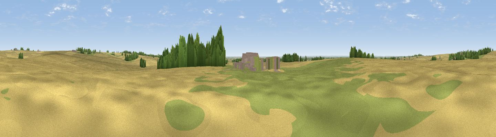

Hameringham Top
#32622 in England · top 51% of its area beats it · near Old BolingbrokeWhere it is
The exact computed spot (TF 31344 66040). Click the marker for map links.
The view, rendered

A 360° render of this exact spot computed from the terrain model, tree cover and land cover — summer colours, afternoon light, calibrated against photographs of famous viewpoints. Real trees, hedges and buildings will differ in detail.
The panorama
Grey silhouette: terrain skyline in each direction (720 bearings, Earth curvature and refraction included). Dashed green: skyline with trees (+15 m) and buildings (+8 m) as obstacles. Blue strip: how far the ground is visible on each bearing.
Where the view opens
Wedge length = distance to the farthest visible ground on that bearing (vegetation-aware). Rings at 10, 25 and 50 km.
What fills the view
80% cropland · 15% grassland · 4% woodland ·
Angular shares of the visible panorama (visual magnitude), not map area. Landscape diversity 0.28 (0–1 Shannon).
Key numbers
More beautiful places nearby
The staircase of upgrades: each row has a higher view potential than everything closer. Driving times are estimates from straight-line distance, calibrated against real road routing — check an actual route before setting out.
| Place | Direction | Drive | Score |
|---|---|---|---|
| Round Hills | N · 3 km | ~8 min | 51.1 |
| Grantam Point | ESE · 5 km | ~11 min | 58.0 |
| Viewpoint near East Keal | ESE · 6 km | ~13 min | 66.0 |
| Viewpoint near Claxby | NNW · 35 km | ~54 min | 71.5 |
| Broombriggs Hill | WSW · 95 km | ~120 min | 74.4 |
| Viewpoint near Woodhouse Eaves | WSW · 95 km | ~120 min | 77.7 |
| Viewpoint near Speeton | N · 110 km | ~135 min | 80.0 |
| Olivers Mount | N · 124 km | ~148 min | 80.3 |
53.17527, -0.03630 · source: osm peak · position refined by local search. Computed location — check access rights before visiting.